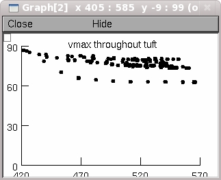

Mitral cell model used in the paper:
Functional structure of the mitral cell dendritic tuft in the
rat olfactory bulb.
Djurisic, M., Popovic, M., Carnevale, N., and Zecevic, D.
Journal of Neuroscience 28:4057-4068, 2008.
Questions about how to use this code should be addressed to
ted.carnevale@yale.edu
na.mod and kd.mod are identical to the files used in the mitral cell
model by Shen, G.Y., Chen, W. R., Midtgaard, J., Shepherd, G.M., and
Hines, M.L. (1999) Computational Analysis of Action Potential
Initiation in Mitral Cell Soma and Dendrites Based on Dual Patch
Recordings. Journal of Neurophysiology 82:3006
These files will generate the data that were used to produce
Supplemental Figure 2 of Djurisic et al. (retrograde spike invasion of
the tuft with passive or active membrane).
First, be sure to compile the mod files with mknrndll or nrnivmodl.
After that, the easiest way to proceed is to use NEURON to load
mosinit.hoc
This will bring up a panel with buttons labeled "Passive tuft" and
"Active tuft".
Clicking on one of these brings up a model with passive or active tuft
membrane, runs a simulation, and displays graphs that show:
--Peak spike amplitude throughout the tuft as a function of distance
from the tuft origin. For example when the "Passive tuft" button is
clicked on one of the graphs shows part of the data in Supplemental
Figure 2:

--Normalized peak spike amplitude throughout the tuft.
--Distribution of peak spike amplitude throughtout the tuft. In this
graph, each compartment in the tuft is represented by a vertical
blue line with x coordinate that is the peak spike amplitude in that
compartment, and height that is 10 x the normalized surface area of
that compartment (normalized by dividing compartment area by the
total area of the tuft).
The black curve is 10 x the smoothed probability of peak spike
amplitude, calculated by convolving a Gaussian with Dirac delta
functions whose x axis offsets and amplitudes are the spike peak
amplitudes and the normalized surface areas of each compartment,
respectively. In other words, this is 10 x the peak spike amplitude
probability function.
--Cumulative membrane area vs. peak spike amplitude. This is the peak
spike amplitude distribution function, calculated by integrating the
Dirac delta functions (there are so many of them that no smoothing
was necessary).
For any point on this curve, the y coordinate is the fraction of
tuft membrane area in which the spike peak was <= the x coordinate.
The horizontal dotted lines at y = 0.1, 0.5, and 0.9 intersect this
curve at the 10th, 50th, and 90th percentiles.
The x coordinates of these intersections are the peak spike
amplitudes that correspond to these percentiles.
For the model with passive membrane there is also a small panel with
radio buttons that allow changing the values of cm and/or Rm, and
running simulations to see how these perturbations alter the results.
Running a simluation produces four output files, whose names and
contents are:
parameters.dat
Parameters of the model cell,
number of segments (compartments) in the tuft,
and the experimental condition.
areas.dat
Surface areas of all segments (compartments) in the tuft, printed tab
separated in the same order as the segments in the tuft SectionList
(see * below). Imagine the following loop:
for each section in tuft
for each compartment in this section, starting at its proximal end,
print the area of this compartment
vpeak.dat
Peak depolarizations in all segments (compartments) in the tuft,
printed tab separated in the same order as the segments
in the tuft SectionList (see * below). Imagine the following loop:
for each section in tuft
for each compartment in this section, starting at its proximal end,
print the peak depolarization of this compartment
results.dat
Mean, minimum, maximum, variance and standard deviation of the peak
depolarizations in the tuft, printed tab separated.
*--This statement
forsec tuft print secname()
prints out, in sequence, the names of the sections in the tuft
SectionList.